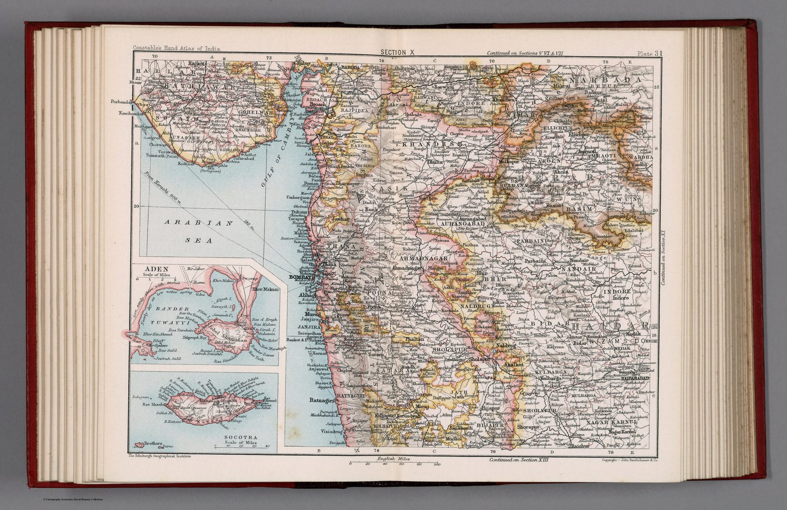

← Home Ground Bombay and Deccan

The atlas system
Plate 31 forms part of the atlas’s numbered sectional series, which divides India into coherent regional reference sheets.
Bombay and Berar
Administrative boundaries, settlements, routes, hachures and spot heights organise the region. Inset maps of Aden and Socotra are reminders that the geography of British India was connected to strategic stations beyond the subcontinent.
Survey condensed
The plate synthesised official and other cartographic work into the compact, consistent visual language of a late-Victorian hand atlas.
The gaze
Aden and Socotra sit in the corners of a sheet about Bombay and Berar, and the arrangement is telling. For the atlas the province is a unit of reference, so the two stations that guarded the sea route are filed under the same heading as the districts inland, and the hachured interior and the distant outposts share one numbered plate.
In the Deccan timeline
The Berar assignment (21 May 1853) · Salar Jang remakes Hyderabad (1853–1875, ministry to 1883) · The cotton boom and bust (1861–1865) · Coda: the Deccan as the Company saw it (1827–1893)